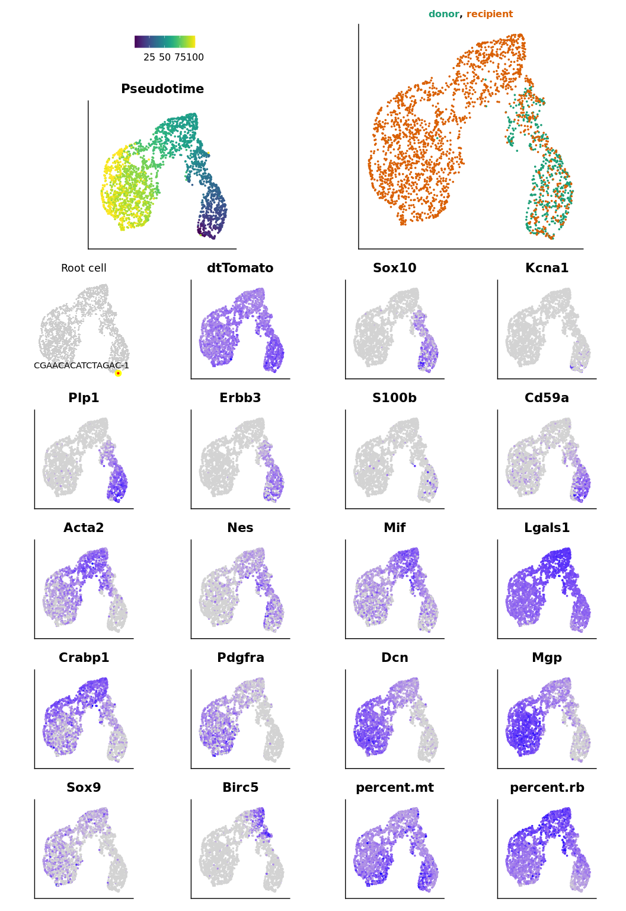
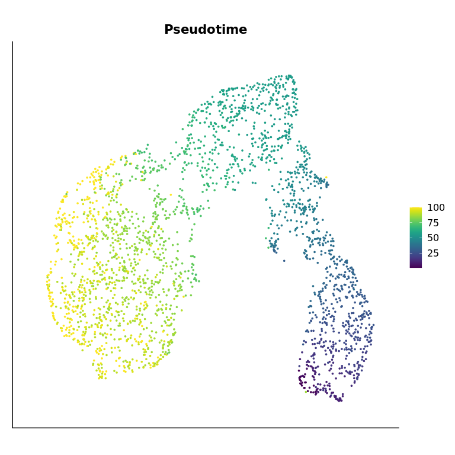

Sample 2020_18 and 2020_23
Tumor cells trajectory using slingshot
Audrey
2022-12-14
This script is used to infer trajectory on tumor cells, using slingshot.
Set environment
library(patchwork)
library(ggplot2)
library(dplyr)We load the parameters :
out_dir = params$out_dirWe load the Seurat object containing all tumor cells from both datasets :
sample_name = "donor18_recipient23"
sobj = readRDS(paste0(out_dir, "/", sample_name, "_sobj_tumor_cells.rds"))
sobj## An object of class Seurat
## 19179 features across 2556 samples within 2 assays
## Active assay: RNA (17179 features, 0 variable features)
## 1 other assay present: mnn.reconstructed
## 2 dimensional reductions calculated: mnn, mnn_umapThis are the settings :
load(paste0(out_dir, "/", sample_name, "_sample_info.rda"))
traj_dimred = "mnn"
traj_umap = "mnn_umap"
seed = 1337L
traj_max_dims = ncol(sobj@reductions[[traj_dimred]]) - 1Trajectory inference
Where is the root ?
root_cell_id = names(which.max(sobj$root_score))
sobj$is_root = colnames(sobj) == root_cell_id
sobj$cell_name = colnames(sobj)
root_plot = aquarius::plot_label_dimplot(sobj, reduction = traj_umap,
col_by = "is_root", col_color = c("gray80", "red"),
label_by = "cell_name", label_val = root_cell_id) +
ggplot2::ggtitle("Root cell") +
ggplot2::theme(plot.title = element_text(hjust = 0.5),
aspect.ratio = 1) +
Seurat::NoLegend() + Seurat::NoAxes()
sobj$is_root = NULL
sobj$cell_name = NULL
root_plot
Now, we perform the trajectory inference :
set.seed(seed)
my_traj = slingshot::slingshot(data = sobj@reductions[[traj_dimred]]@cell.embeddings[, c(1:traj_max_dims)])
## Add pseudotime
sobj$pseudotime = slingshot::slingPseudotime(my_traj)[, 1][colnames(sobj)]
# my_traj = aquarius::traj_inference(sobj,
# seed = seed,
# expression_assay = "RNA",
# expression_slot = "data",
# count_assay = "RNA",
# count_slot = "counts",
# dimred_name = traj_dimred,
# dimred_max_dim = ,
# root_cell_id = root_cell_id,
# ti_method = dynmethods::ti_slingshot())
#
# ## Add pseudotime
# sobj$pseudotime = my_traj$pseudotimeWe can visualize pseudotime :
p1 = Seurat::FeaturePlot(sobj, features = "pseudotime",
reduction = traj_umap,
cols = viridis::viridis(n = 100)) +
ggplot2::ggtitle("Pseudotime") +
ggplot2::theme(plot.title = element_text(hjust = 0.5, face = "bold"),
axis.ticks = element_blank(),
axis.text = element_blank(),
axis.title = element_blank(),
aspect.ratio = 1)
p1
We can generate the figure :
## Make some plots
# Colored title
# https://stackoverflow.com/questions/55874998/replace-nth-occurrence-of-a-character-in-a-string-with-something-else
# https://stackoverflow.com/questions/49735290/ggplot2-color-individual-words-in-title-to-match-colors-of-groups
samples_of_interest = unique(sobj$orig.ident)
mytitle = sapply(samples_of_interest, FUN = function(one_sample) {
one_color = sample_info[sample_info$sample_identifiant == one_sample, "color"]
new_char = paste0("<span style='color:", one_color,
";'>", one_sample, "</span>")
return(new_char)
})
if (length(mytitle) > 7) {
every4 = seq(from = 1, to = length(mytitle), by = 5)
every4 = every4[-1]
for (elem in every4) {
mytitle[elem] = paste0("<br>", mytitle[elem])
}
}
mytitle = paste(mytitle, collapse = ", ")
# mytitle = gsub("((?:[^,]+, ){3}[^ ]+),", "\\1\n", mytitle)
# Gene of interest
p2 = Seurat::FeaturePlot(sobj,
features = c("dtTomato", "Sox10", "Kcna1",
"Plp1", "Erbb3", "S100b", "Cd59a",
"Acta2", "Nes", "Mif", "Lgals1",
"Crabp1", "Pdgfra", "Dcn", "Mgp",
"Sox9", "Birc5", "percent.mt", "percent.rb"),
reduction = traj_umap, combine = FALSE)
p2 = lapply(p2, FUN = function(my_plot) {
my_plot = my_plot +
ggplot2::theme(aspect.ratio = 1,
axis.ticks = element_blank(),
axis.text = element_blank(),
axis.title = element_blank()) +
Seurat::NoLegend()
return(my_plot)
})
# Sample of origin
p3 = Seurat::DimPlot(sobj, reduction = traj_umap,
group.by = "orig.ident") +
ggplot2::scale_color_manual(values = sample_info$color,
breaks = sample_info$sample_identifiant) +
ggplot2::ggtitle(mytitle) +
ggplot2::theme(plot.title = ggtext::element_markdown(hjust = 0.5,
face = "bold",
size = 12),
axis.ticks = element_blank(),
axis.text = element_blank(),
axis.title = element_blank(),
aspect.ratio = 1) +
Seurat::NoLegend()
# Patchwork
p2[[length(p2) + 1]] = patchwork::guide_area()
p2[[length(p2) + 1]] = root_plot
p2[[length(p2) + 1]] = p1
p2[[length(p2) + 1]] = p3
p2 = p2[c(length(p2) - 3, # guide_area
length(p2) - 1, # p1 : trajectory
length(p2), # p3 : sample of origin
length(p2) - 2, # root_plot
1:(length(p2) - 4))] # all features
mylayout = "
#AA#CCCC
BBBBCCCC
BBBBCCCC
BBBBCCCC
DDEEFFGG
DDEEFFGG
HHIIJJKK
HHIIJJKK
LLMMNNOO
LLMMNNOO
PPQQRRSS
PPQQRRSS
TTUUVVWW
TTUUVVWW
"
p = patchwork::wrap_plots(p2) +
patchwork::plot_layout(design = mylayout,
guide = "collect") &
ggplot2::theme(legend.direction = "horizontal")In order to save the dataset, we create a list containing everything :
output = list(traj_umap = traj_umap,
traj_dimred = traj_dimred,
root_plot = root_plot,
my_traj = my_traj,
sobj = sobj,
p1 = p1, p2 = p2,
p3 = p3, p = p)We can visualize the main figure :
output$p
We can zoom on the pseudotime figure :
output$p1
Where are cells from each dataset ?
# Build plots
plot_list = aquarius::plot_split_dimred(sobj = sobj,
reduction = traj_umap,
split_by = "orig.ident",
split_color = sample_info %>%
dplyr::arrange(sample_identifiant) %>%
dplyr::pull(color),
group_by = "orig.ident",
group_color = rep("black", length(unique(sobj$orig.ident))),
bg_pt_size = 0.25,
main_pt_size = 0.25)
plot_list = lapply(plot_list, FUN = function(one_plot) {
plot_title = as.character(one_plot$labels$title)
nb_cells = sum(sobj$orig.ident == plot_title)
one_plot = one_plot +
ggplot2::labs(subtitle = paste0(nb_cells, " cells")) +
ggplot2::theme(aspect.ratio = 1,
plot.title = element_text(hjust = 0.5, face = "bold", size = 15),
plot.subtitle = element_text(hjust = 0.5, face = "bold", size = 12)) +
Seurat::NoLegend()
})
# Patchwork
patchwork::wrap_plots(plot_list, nrow = 1)
We save it !
saveRDS(output, file = paste0(out_dir, "/trajectory_output_slingshot.rds"))R Session
show
## R version 3.6.3 (2020-02-29)
## Platform: x86_64-pc-linux-gnu (64-bit)
## Running under: Ubuntu 20.04.5 LTS
##
## Matrix products: default
## BLAS: /usr/local/lib/R/lib/libRblas.so
## LAPACK: /usr/local/lib/R/lib/libRlapack.so
##
## locale:
## [1] C
##
## attached base packages:
## [1] stats graphics grDevices utils datasets methods base
##
## other attached packages:
## [1] Seurat_3.1.5 dplyr_1.0.7 ggplot2_3.3.5
## [4] patchwork_1.0.1.9000
##
## loaded via a namespace (and not attached):
## [1] softImpute_1.4 graphlayouts_0.7.0
## [3] pbapply_1.4-2 lattice_0.20-41
## [5] haven_2.3.1 vctrs_0.3.8
## [7] usethis_2.0.1 dynwrap_1.2.1
## [9] blob_1.2.1 survival_3.2-13
## [11] prodlim_2019.11.13 dynutils_1.0.5.9000
## [13] DBI_1.1.1 R.utils_2.11.0
## [15] SingleCellExperiment_1.8.0 rappdirs_0.3.3
## [17] uwot_0.1.8 dqrng_0.2.1
## [19] jpeg_0.1-8.1 zlibbioc_1.32.0
## [21] pspline_1.0-18 pcaMethods_1.78.0
## [23] mvtnorm_1.1-1 htmlwidgets_1.5.4
## [25] GlobalOptions_0.1.2 future_1.22.1
## [27] UpSetR_1.4.0 laeken_0.5.2
## [29] leiden_0.3.3 clustree_0.4.3
## [31] parallel_3.6.3 scater_1.14.6
## [33] irlba_2.3.3 markdown_1.1
## [35] DEoptimR_1.0-9 tidygraph_1.1.2
## [37] Rcpp_1.0.9 readr_2.0.2
## [39] KernSmooth_2.23-17 carrier_0.1.0
## [41] gdata_2.18.0 DelayedArray_0.12.3
## [43] limma_3.42.2 RcppParallel_5.1.4
## [45] Hmisc_4.4-0 fs_1.5.2
## [47] RSpectra_0.16-0 fastmatch_1.1-0
## [49] ranger_0.12.1 digest_0.6.25
## [51] png_0.1-7 sctransform_0.2.1
## [53] cowplot_1.0.0 DOSE_3.12.0
## [55] TInGa_0.0.0.9000 slingshot_1.4.0
## [57] ggraph_2.0.3 pkgconfig_2.0.3
## [59] GO.db_3.10.0 DelayedMatrixStats_1.8.0
## [61] gower_0.2.1 ggbeeswarm_0.6.0
## [63] iterators_1.0.12 DropletUtils_1.6.1
## [65] reticulate_1.26 clusterProfiler_3.14.3
## [67] SummarizedExperiment_1.16.1 circlize_0.4.16
## [69] beeswarm_0.4.0 GetoptLong_1.0.5
## [71] xfun_0.35 bslib_0.3.1
## [73] zoo_1.8-10 tidyselect_1.1.0
## [75] reshape2_1.4.4 purrr_0.3.4
## [77] ica_1.0-2 pcaPP_1.9-73
## [79] viridisLite_0.3.0 rtracklayer_1.46.0
## [81] rlang_1.0.2 hexbin_1.28.1
## [83] jquerylib_0.1.4 dyneval_0.9.9
## [85] glue_1.4.2 RColorBrewer_1.1-2
## [87] matrixStats_0.56.0 stringr_1.4.0
## [89] lava_1.6.7 europepmc_0.3
## [91] DESeq2_1.26.0 recipes_0.1.17
## [93] labeling_0.3 class_7.3-17
## [95] BiocNeighbors_1.4.2 DO.db_2.9
## [97] annotate_1.64.0 jsonlite_1.7.2
## [99] XVector_0.26.0 princurve_2.1.4
## [101] bit_4.0.4 aquarius_0.1.3
## [103] gridExtra_2.3 gplots_3.0.3
## [105] Rsamtools_2.2.3 stringi_1.4.6
## [107] processx_3.5.2 gsl_2.1-6
## [109] bitops_1.0-6 cli_3.0.1
## [111] batchelor_1.2.4 RSQLite_2.2.0
## [113] randomForest_4.6-14 tidyr_1.1.4
## [115] data.table_1.14.2 rstudioapi_0.13
## [117] org.Mm.eg.db_3.10.0 GenomicAlignments_1.22.1
## [119] nlme_3.1-147 qvalue_2.18.0
## [121] scran_1.14.6 locfit_1.5-9.4
## [123] scDblFinder_1.1.8 listenv_0.8.0
## [125] ggthemes_4.2.4 gridGraphics_0.5-0
## [127] R.oo_1.24.0 dbplyr_1.4.4
## [129] BiocGenerics_0.32.0 TTR_0.24.2
## [131] readxl_1.3.1 lifecycle_1.0.1
## [133] timeDate_3043.102 ggpattern_0.3.1
## [135] munsell_0.5.0 cellranger_1.1.0
## [137] R.methodsS3_1.8.1 proxyC_0.1.5
## [139] visNetwork_2.0.9 caTools_1.18.0
## [141] codetools_0.2-16 Biobase_2.46.0
## [143] GenomeInfoDb_1.22.1 vipor_0.4.5
## [145] lmtest_0.9-38 htmlTable_1.13.3
## [147] triebeard_0.3.0 lsei_1.2-0
## [149] xtable_1.8-4 ROCR_1.0-7
## [151] BiocManager_1.30.10 scatterplot3d_0.3-41
## [153] abind_1.4-5 farver_2.0.3
## [155] parallelly_1.28.1 RANN_2.6.1
## [157] askpass_1.1 GenomicRanges_1.38.0
## [159] RcppAnnoy_0.0.16 tibble_3.1.5
## [161] ggdendro_0.1-20 cluster_2.1.0
## [163] future.apply_1.5.0 dendextend_1.15.1
## [165] Matrix_1.3-2 ellipsis_0.3.2
## [167] prettyunits_1.1.1 lubridate_1.7.9
## [169] ggridges_0.5.2 igraph_1.2.5
## [171] RcppEigen_0.3.3.7.0 fgsea_1.12.0
## [173] remotes_2.4.2 destiny_3.0.1
## [175] scBFA_1.0.0 VIM_6.1.1
## [177] testthat_3.1.0 htmltools_0.5.2
## [179] BiocFileCache_1.10.2 yaml_2.2.1
## [181] utf8_1.1.4 plotly_4.9.2.1
## [183] XML_3.99-0.3 ModelMetrics_1.2.2.2
## [185] e1071_1.7-3 foreign_0.8-76
## [187] withr_2.5.0 fitdistrplus_1.0-14
## [189] BiocParallel_1.20.1 xgboost_1.4.1.1
## [191] bit64_4.0.5 foreach_1.5.0
## [193] robustbase_0.93-9 Biostrings_2.54.0
## [195] GOSemSim_2.13.1 rsvd_1.0.3
## [197] memoise_2.0.0 evaluate_0.18
## [199] forcats_0.5.0 rio_0.5.16
## [201] geneplotter_1.64.0 tzdb_0.1.2
## [203] caret_6.0-86 ps_1.6.0
## [205] curl_4.3 DiagrammeR_1.0.6.1
## [207] fdrtool_1.2.15 fansi_0.4.1
## [209] highr_0.8 urltools_1.7.3
## [211] xts_0.12.1 acepack_1.4.1
## [213] edgeR_3.28.1 checkmate_2.0.0
## [215] scds_1.2.0 cachem_1.0.6
## [217] npsurv_0.4-0 rjson_0.2.20
## [219] openxlsx_4.1.5 ggrepel_0.9.1
## [221] clue_0.3-60 stabledist_0.7-1
## [223] tools_3.6.3 sass_0.4.0
## [225] nichenetr_0.1.0 magrittr_2.0.1
## [227] RCurl_1.98-1.2 proxy_0.4-24
## [229] car_3.0-11 ape_5.3
## [231] ggplotify_0.0.5 xml2_1.3.2
## [233] httr_1.4.2 assertthat_0.2.1
## [235] rmarkdown_2.18 boot_1.3-25
## [237] globals_0.14.0 R6_2.4.1
## [239] Rhdf5lib_1.8.0 nnet_7.3-14
## [241] RcppHNSW_0.2.0 progress_1.2.2
## [243] genefilter_1.68.0 statmod_1.4.34
## [245] gtools_3.8.2 shape_1.4.6
## [247] HDF5Array_1.14.4 BiocSingular_1.2.2
## [249] rhdf5_2.30.1 splines_3.6.3
## [251] carData_3.0-4 colorspace_1.4-1
## [253] generics_0.1.0 stats4_3.6.3
## [255] base64enc_0.1-3 dynfeature_1.0.0.9000
## [257] smoother_1.1 gridtext_0.1.1
## [259] pillar_1.6.3 tweenr_1.0.1
## [261] sp_1.4-1 ggplot.multistats_1.0.0
## [263] rvcheck_0.1.8 GenomeInfoDbData_1.2.2
## [265] plyr_1.8.6 gtable_0.3.0
## [267] zip_2.2.0 knitr_1.41
## [269] ComplexHeatmap_2.13.1 latticeExtra_0.6-29
## [271] biomaRt_2.42.1 IRanges_2.20.2
## [273] fastmap_1.1.0 ADGofTest_0.3
## [275] copula_1.0-0 doParallel_1.0.15
## [277] AnnotationDbi_1.48.0 vcd_1.4-8
## [279] babelwhale_1.0.1 openssl_1.4.1
## [281] scales_1.1.1 backports_1.2.1
## [283] S4Vectors_0.24.4 ipred_0.9-12
## [285] enrichplot_1.6.1 hms_1.1.1
## [287] ggforce_0.3.1 Rtsne_0.15
## [289] numDeriv_2016.8-1.1 polyclip_1.10-0
## [291] grid_3.6.3 lazyeval_0.2.2
## [293] Formula_1.2-3 tsne_0.1-3
## [295] crayon_1.3.4 MASS_7.3-54
## [297] pROC_1.16.2 viridis_0.5.1
## [299] dynparam_1.0.0 rpart_4.1-15
## [301] compiler_3.6.3 ggtext_0.1.0
## [303] zinbwave_1.8.0LS0tCnRpdGxlOiAiU2FtcGxlIDIwMjBfMTggYW5kIDIwMjBfMjMiCnN1YnRpdGxlOiAiVHVtb3IgY2VsbHMgdHJhamVjdG9yeSB1c2luZyBzbGluZ3Nob3QiCmF1dGhvcjogIkF1ZHJleSIKZGF0ZTogImByIGZvcm1hdChTeXMudGltZSgpLCAnJVktJW0tJWQnKWAiCm91dHB1dDoKICBodG1sX2RvY3VtZW50OgogICAgc2VsZl9jb250YWluZWQ6IGZhbHNlCiAgICBsaWJfZGlyOiBsaWJzCiAgICBrZWVwX21kOiB0cnVlCiAgICBjb2RlX2ZvbGRpbmc6IHNob3cKICAgIGNvZGVfZG93bmxvYWQ6IHRydWUKICAgIHRvYzogdHJ1ZQogICAgdG9jX2Zsb2F0OiB0cnVlCiAgICBudW1iZXJfc2VjdGlvbnM6IGZhbHNlCnBhcmFtczoKICBvdXRfZGlyOiBhcmcxCi0tLQoKPHN0eWxlPgpib2R5IHsKdGV4dC1hbGlnbjoganVzdGlmeX0KPC9zdHlsZT4KCjwhLS0gQXV0b21hdGljYWxseSBjb21wdXRlcyBhbmQgcHJpbnRzIGluIHRoZSBvdXRwdXQgdGhlIHJ1bm5pbmcgdGltZSBmb3IgYW55IGNvZGUgY2h1bmsgLS0+CmBgYHtyLCBlY2hvPUZBTFNFfQojIGh0dHBzOi8vZ2l0aHViLmNvbS9yc3R1ZGlvL3JtYXJrZG93bi9pc3N1ZXMvMTQ1Mwpob29rcyA9IGtuaXRyOjprbml0X2hvb2tzJGdldCgpCmhvb2tfZm9sZGFibGUgPSBmdW5jdGlvbih0eXBlKSB7CiAgZm9yY2UodHlwZSkKICBmdW5jdGlvbih4LCBvcHRpb25zKSB7CiAgICByZXMgPSBob29rc1tbdHlwZV1dKHgsIG9wdGlvbnMpCiAgICAKICAgIGlmIChpc0ZBTFNFKG9wdGlvbnNbW3Bhc3RlMCgiZm9sZF8iLCB0eXBlKV1dKSkgcmV0dXJuKHJlcykKICAgIAogICAgcGFzdGUwKAogICAgICAiPGRldGFpbHM+PHN1bW1hcnk+IiwgInNob3ciLCAiPC9zdW1tYXJ5PlxuXG4iLAogICAgICByZXMsCiAgICAgICJcblxuPC9kZXRhaWxzPiIKICAgICkKICB9Cn0Ka25pdHI6OmtuaXRfaG9va3Mkc2V0KAogIG91dHB1dCA9IGhvb2tfZm9sZGFibGUoIm91dHB1dCIpLAogIHBsb3QgPSBob29rX2ZvbGRhYmxlKCJwbG90IiksCiAgdGltZV9pdCA9IGxvY2FsKHsKICAgIG5vdyA9IE5VTEwKICAgIGZ1bmN0aW9uKGJlZm9yZSwgb3B0aW9ucykgewogICAgICBpZiAob3B0aW9ucyR0aW1lX2l0KSB7CiAgICAgICAgaWYgKGJlZm9yZSkgewogICAgICAgICAgbm93IDw8LSBTeXMudGltZSgpCiAgICAgICAgfSBlbHNlIHsKICAgICAgICAgIHJlcyA9IGRpZmZ0aW1lKFN5cy50aW1lKCksIG5vdywgdW5pdHMgPSAic2VjcyIpCiAgICAgICAgICBwYXN0ZSgiKFRpbWUgdG8gcnVuIDoiLCByb3VuZChyZXMsIGRpZ2l0cyA9IDIpLCAicykiKQogICAgICAgIH0KICAgICAgfQogICAgfQogIH0pCikKYGBgCgo8IS0tIFNldCBkZWZhdWx0IHBhcmFtZXRlcnMgZm9yIGFsbCBjaHVua3MgLS0+CmBgYHtyLCBzZXR1cCwgaW5jbHVkZSA9IEZBTFNFfQpvd25fbmFtZSA9IGtuaXRyOjpjdXJyZW50X2lucHV0KCkgIyBteUZpbGVOYW1lLlJtZApvd25fbmFtZSA9IHN1YnN0cihvd25fbmFtZSwgc3RhcnQgPSAxLCBzdG9wID0gbmNoYXIob3duX25hbWUpIC0gNCkKZmlsZV9kaXIgPSBwYXN0ZTAoImZpbGVzLyIsIG93bl9uYW1lLCAiXyIsCiAgICAgICAgICAgICAgICAgIHJhd1RvQ2hhcihhcy5yYXcoc2FtcGxlKGMoNDg6NTcsNjU6OTAsOTc6MTIyKSwgMTAsIHJlcGxhY2UgPSBUUlVFKSkpLCAiLyIpCiAgICAgICAgICAgICAgICAgIAprbml0cjo6b3B0c19jaHVuayRzZXQoZWNobyA9IFRSVUUsICMgZGlzcGxheSBjb2RlCiAgICAgICAgICAgICAgICAgICAgICBmaWcucGF0aCA9IGZpbGVfZGlyLCAjIGZpZyBkaXJlY3RvcnkKICAgICAgICAgICAgICAgICAgICAgIAogICAgICAgICAgICAgICAgICAgICAgIyBkaXNwbGF5IGNodW5rIG91dHB1dAogICAgICAgICAgICAgICAgICAgICAgbWVzc2FnZSA9IEZBTFNFLAogICAgICAgICAgICAgICAgICAgICAgd2FybmluZyA9IEZBTFNFLAogICAgICAgICAgICAgICAgICAgICAgZm9sZF9vdXRwdXQgPSBGQUxTRSwgIyB1c2VmdWxsIGZvciBzZXNzaW9uSW5mbygpCiAgICAgICAgICAgICAgICAgICAgICBmb2xkX3Bsb3QgPSBGQUxTRSwKICAgICAgICAgICAgICAgICAgICAgIAogICAgICAgICAgICAgICAgICAgICAgIyBmaWd1cmUgc2V0dGluZ3MKICAgICAgICAgICAgICAgICAgICAgIGZpZy5hbGlnbiA9ICdjZW50ZXInLAogICAgICAgICAgICAgICAgICAgICAgZmlnLndpZHRoID0gMjAsCiAgICAgICAgICAgICAgICAgICAgICBmaWcuaGVpZ2h0ID0gMTUsCiAgICAgICAgICAgICAgICAgICAgICAKICAgICAgICAgICAgICAgICAgICAgICMgc29tZXRoaW5nIGFib3V0IHNlZWQsIGNodW5rIGFuZCBSbWFya2Rvd24gY29tcGlsYXRpb24KICAgICAgICAgICAgICAgICAgICAgICMgaHR0cHM6Ly9zdGFja292ZXJmbG93LmNvbS9xdWVzdGlvbnMvMzk0MTcwMDMvbG9uZy12ZWN0b3JzLW5vdC1zdXBwb3J0ZWQteWV0LWVycm9yLWluLXJtZC1idXQtbm90LWluLXItc2NyaXB0CiAgICAgICAgICAgICAgICAgICAgICBjYWNoZSA9IEZBTFNFLAogICAgICAgICAgICAgICAgICAgICAgY2FjaGUubGF6eSA9IEZBTFNFLCAKICAgICAgICAgICAgICAgICAgICAgIAogICAgICAgICAgICAgICAgICAgICAgIyBhZGQgcnVudGltZSBhZnRlciBjaHVuawogICAgICAgICAgICAgICAgICAgICAgdGltZV9pdCA9IEZBTFNFKQpgYGAKClRoaXMgc2NyaXB0IGlzIHVzZWQgdG8gaW5mZXIgdHJhamVjdG9yeSBvbiB0dW1vciBjZWxscywgdXNpbmcgc2xpbmdzaG90LgoKIyBTZXQgZW52aXJvbm1lbnQKCmBgYHtyIGxpYnJhcnksIHJlc3VsdHMgPSAnaGlkZSd9CmxpYnJhcnkocGF0Y2h3b3JrKQpsaWJyYXJ5KGdncGxvdDIpCmxpYnJhcnkoZHBseXIpCmBgYAoKV2UgbG9hZCB0aGUgcGFyYW1ldGVycyA6CgpgYGB7ciBnZXRfcGFyYW19Cm91dF9kaXIgPSBwYXJhbXMkb3V0X2RpcgpgYGAKCldlIGxvYWQgdGhlIFNldXJhdCBvYmplY3QgY29udGFpbmluZyBhbGwgdHVtb3IgY2VsbHMgZnJvbSBib3RoIGRhdGFzZXRzIDoKCmBgYHtyIGxvYWRfZGF0YXNldH0Kc2FtcGxlX25hbWUgPSAiZG9ub3IxOF9yZWNpcGllbnQyMyIKCnNvYmogPSByZWFkUkRTKHBhc3RlMChvdXRfZGlyLCAiLyIsIHNhbXBsZV9uYW1lLCAiX3NvYmpfdHVtb3JfY2VsbHMucmRzIikpCnNvYmoKYGBgCgoKVGhpcyBhcmUgdGhlIHNldHRpbmdzIDoKCmBgYHtyIHRyYWpfc2V0dGluZ3N9CmxvYWQocGFzdGUwKG91dF9kaXIsICIvIiwgc2FtcGxlX25hbWUsICJfc2FtcGxlX2luZm8ucmRhIikpCgp0cmFqX2RpbXJlZCA9ICJtbm4iCnRyYWpfdW1hcCA9ICJtbm5fdW1hcCIKc2VlZCA9IDEzMzdMCnRyYWpfbWF4X2RpbXMgPSBuY29sKHNvYmpAcmVkdWN0aW9uc1tbdHJhal9kaW1yZWRdXSkgLSAxCmBgYAoKCiMgVHJhamVjdG9yeSBpbmZlcmVuY2UKCldoZXJlIGlzIHRoZSByb290ID8KCmBgYHtyIHJvb3RfY2VsbCwgZmlnLndpZHRoID0gNywgZmlnLmhlaWdodCA9IDd9CnJvb3RfY2VsbF9pZCA9IG5hbWVzKHdoaWNoLm1heChzb2JqJHJvb3Rfc2NvcmUpKQpzb2JqJGlzX3Jvb3QgPSBjb2xuYW1lcyhzb2JqKSA9PSByb290X2NlbGxfaWQKc29iaiRjZWxsX25hbWUgPSBjb2xuYW1lcyhzb2JqKQpyb290X3Bsb3QgPSBhcXVhcml1czo6cGxvdF9sYWJlbF9kaW1wbG90KHNvYmosIHJlZHVjdGlvbiA9IHRyYWpfdW1hcCwKICAgICAgICAgICAgICAgICAgICAgICAgICAgICAgICAgICAgICAgICBjb2xfYnkgPSAiaXNfcm9vdCIsIGNvbF9jb2xvciA9IGMoImdyYXk4MCIsICJyZWQiKSwKICAgICAgICAgICAgICAgICAgICAgICAgICAgICAgICAgICAgICAgICBsYWJlbF9ieSA9ICJjZWxsX25hbWUiLCBsYWJlbF92YWwgPSByb290X2NlbGxfaWQpICsKICBnZ3Bsb3QyOjpnZ3RpdGxlKCJSb290IGNlbGwiKSArCiAgZ2dwbG90Mjo6dGhlbWUocGxvdC50aXRsZSA9IGVsZW1lbnRfdGV4dChoanVzdCA9IDAuNSksCiAgICAgICAgICAgICAgICAgYXNwZWN0LnJhdGlvID0gMSkgKwogIFNldXJhdDo6Tm9MZWdlbmQoKSArIFNldXJhdDo6Tm9BeGVzKCkKCnNvYmokaXNfcm9vdCA9IE5VTEwKc29iaiRjZWxsX25hbWUgPSBOVUxMCgpyb290X3Bsb3QKYGBgCgoKTm93LCB3ZSBwZXJmb3JtIHRoZSB0cmFqZWN0b3J5IGluZmVyZW5jZSA6CgpgYGB7ciBzbGluZ3Nob3QsIGNhY2hlID0gRkFMU0V9CnNldC5zZWVkKHNlZWQpCm15X3RyYWogPSBzbGluZ3Nob3Q6OnNsaW5nc2hvdChkYXRhID0gc29iakByZWR1Y3Rpb25zW1t0cmFqX2RpbXJlZF1dQGNlbGwuZW1iZWRkaW5nc1ssIGMoMTp0cmFqX21heF9kaW1zKV0pCgojIyBBZGQgcHNldWRvdGltZQpzb2JqJHBzZXVkb3RpbWUgPSBzbGluZ3Nob3Q6OnNsaW5nUHNldWRvdGltZShteV90cmFqKVssIDFdW2NvbG5hbWVzKHNvYmopXQoKIyBteV90cmFqID0gYXF1YXJpdXM6OnRyYWpfaW5mZXJlbmNlKHNvYmosCiMgICAgICAgICAgICAgICAgICAgICAgICAgICAgICAgICAgICBzZWVkID0gc2VlZCwKIyAgICAgICAgICAgICAgICAgICAgICAgICAgICAgICAgICAgIGV4cHJlc3Npb25fYXNzYXkgPSAiUk5BIiwKIyAgICAgICAgICAgICAgICAgICAgICAgICAgICAgICAgICAgIGV4cHJlc3Npb25fc2xvdCA9ICJkYXRhIiwKIyAgICAgICAgICAgICAgICAgICAgICAgICAgICAgICAgICAgIGNvdW50X2Fzc2F5ID0gIlJOQSIsCiMgICAgICAgICAgICAgICAgICAgICAgICAgICAgICAgICAgICBjb3VudF9zbG90ID0gImNvdW50cyIsCiMgICAgICAgICAgICAgICAgICAgICAgICAgICAgICAgICAgICBkaW1yZWRfbmFtZSA9IHRyYWpfZGltcmVkLAojICAgICAgICAgICAgICAgICAgICAgICAgICAgICAgICAgICAgZGltcmVkX21heF9kaW0gPSAsCiMgICAgICAgICAgICAgICAgICAgICAgICAgICAgICAgICAgICByb290X2NlbGxfaWQgPSByb290X2NlbGxfaWQsCiMgICAgICAgICAgICAgICAgICAgICAgICAgICAgICAgICAgICB0aV9tZXRob2QgPSBkeW5tZXRob2RzOjp0aV9zbGluZ3Nob3QoKSkKIyAKIyAjIyBBZGQgcHNldWRvdGltZQojIHNvYmokcHNldWRvdGltZSA9IG15X3RyYWokcHNldWRvdGltZQpgYGAKCldlIGNhbiB2aXN1YWxpemUgcHNldWRvdGltZSA6CgpgYGB7ciBwc2V1ZG90aW1lMSwgZmlnLndpZHRoID0gOCwgZmlnLmhlaWdodCA9IDh9CnAxID0gU2V1cmF0OjpGZWF0dXJlUGxvdChzb2JqLCBmZWF0dXJlcyA9ICJwc2V1ZG90aW1lIiwKICAgICAgICAgICAgICAgICAgICAgICAgIHJlZHVjdGlvbiA9IHRyYWpfdW1hcCwKICAgICAgICAgICAgICAgICAgICAgICAgIGNvbHMgPSB2aXJpZGlzOjp2aXJpZGlzKG4gPSAxMDApKSArCiAgZ2dwbG90Mjo6Z2d0aXRsZSgiUHNldWRvdGltZSIpICsKICBnZ3Bsb3QyOjp0aGVtZShwbG90LnRpdGxlID0gZWxlbWVudF90ZXh0KGhqdXN0ID0gMC41LCBmYWNlID0gImJvbGQiKSwKICAgICAgICAgICAgICAgICBheGlzLnRpY2tzID0gZWxlbWVudF9ibGFuaygpLAogICAgICAgICAgICAgICAgIGF4aXMudGV4dCA9IGVsZW1lbnRfYmxhbmsoKSwKICAgICAgICAgICAgICAgICBheGlzLnRpdGxlID0gZWxlbWVudF9ibGFuaygpLAogICAgICAgICAgICAgICAgIGFzcGVjdC5yYXRpbyA9IDEpCnAxCmBgYAoKV2UgY2FuIGdlbmVyYXRlIHRoZSBmaWd1cmUgOgoKYGBge3IgZmlndXJlcywgY2xhc3Muc291cmNlID0gJ2ZvbGQtaGlkZSd9CiMjIE1ha2Ugc29tZSBwbG90cwojIENvbG9yZWQgdGl0bGUKIyBodHRwczovL3N0YWNrb3ZlcmZsb3cuY29tL3F1ZXN0aW9ucy81NTg3NDk5OC9yZXBsYWNlLW50aC1vY2N1cnJlbmNlLW9mLWEtY2hhcmFjdGVyLWluLWEtc3RyaW5nLXdpdGgtc29tZXRoaW5nLWVsc2UKIyBodHRwczovL3N0YWNrb3ZlcmZsb3cuY29tL3F1ZXN0aW9ucy80OTczNTI5MC9nZ3Bsb3QyLWNvbG9yLWluZGl2aWR1YWwtd29yZHMtaW4tdGl0bGUtdG8tbWF0Y2gtY29sb3JzLW9mLWdyb3VwcwpzYW1wbGVzX29mX2ludGVyZXN0ID0gdW5pcXVlKHNvYmokb3JpZy5pZGVudCkKbXl0aXRsZSA9IHNhcHBseShzYW1wbGVzX29mX2ludGVyZXN0LCBGVU4gPSBmdW5jdGlvbihvbmVfc2FtcGxlKSB7CiAgb25lX2NvbG9yID0gc2FtcGxlX2luZm9bc2FtcGxlX2luZm8kc2FtcGxlX2lkZW50aWZpYW50ID09IG9uZV9zYW1wbGUsICJjb2xvciJdCiAgbmV3X2NoYXIgPSBwYXN0ZTAoIjxzcGFuIHN0eWxlPSdjb2xvcjoiLCBvbmVfY29sb3IsCiAgICAgICAgICAgICAgICAgICAgIjsnPiIsIG9uZV9zYW1wbGUsICI8L3NwYW4+IikKICByZXR1cm4obmV3X2NoYXIpCn0pCmlmIChsZW5ndGgobXl0aXRsZSkgPiA3KSB7CiAgZXZlcnk0ID0gc2VxKGZyb20gPSAxLCB0byA9IGxlbmd0aChteXRpdGxlKSwgYnkgPSA1KQogIGV2ZXJ5NCA9IGV2ZXJ5NFstMV0KICBmb3IgKGVsZW0gaW4gZXZlcnk0KSB7CiAgICBteXRpdGxlW2VsZW1dID0gcGFzdGUwKCI8YnI+IiwgbXl0aXRsZVtlbGVtXSkKICB9Cn0KbXl0aXRsZSA9IHBhc3RlKG15dGl0bGUsIGNvbGxhcHNlID0gIiwgIikKIyBteXRpdGxlID0gZ3N1YigiKCg/OlteLF0rLCApezN9W14gXSspLCIsICJcXDFcbiIsIG15dGl0bGUpCgojIEdlbmUgb2YgaW50ZXJlc3QKcDIgPSBTZXVyYXQ6OkZlYXR1cmVQbG90KHNvYmosCiAgICAgICAgICAgICAgICAgICAgICAgICBmZWF0dXJlcyA9IGMoImR0VG9tYXRvIiwgIlNveDEwIiwgIktjbmExIiwKICAgICAgICAgICAgICAgICAgICAgICAgICAgICAgICAgICAgICAiUGxwMSIsICJFcmJiMyIsICJTMTAwYiIsICJDZDU5YSIsCiAgICAgICAgICAgICAgICAgICAgICAgICAgICAgICAgICAgICAgIkFjdGEyIiwgIk5lcyIsICJNaWYiLCAiTGdhbHMxIiwKICAgICAgICAgICAgICAgICAgICAgICAgICAgICAgICAgICAgICAiQ3JhYnAxIiwgIlBkZ2ZyYSIsICJEY24iLCAiTWdwIiwKICAgICAgICAgICAgICAgICAgICAgICAgICAgICAgICAgICAgICAiU294OSIsICJCaXJjNSIsICJwZXJjZW50Lm10IiwgInBlcmNlbnQucmIiKSwKICAgICAgICAgICAgICAgICAgICAgICAgIHJlZHVjdGlvbiA9IHRyYWpfdW1hcCwgY29tYmluZSA9IEZBTFNFKQpwMiA9IGxhcHBseShwMiwgRlVOID0gZnVuY3Rpb24obXlfcGxvdCkgewogIG15X3Bsb3QgPSBteV9wbG90ICsKICAgIGdncGxvdDI6OnRoZW1lKGFzcGVjdC5yYXRpbyA9IDEsCiAgICAgICAgICAgICAgICAgICBheGlzLnRpY2tzID0gZWxlbWVudF9ibGFuaygpLAogICAgICAgICAgICAgICAgICAgYXhpcy50ZXh0ID0gZWxlbWVudF9ibGFuaygpLAogICAgICAgICAgICAgICAgICAgYXhpcy50aXRsZSA9IGVsZW1lbnRfYmxhbmsoKSkgKwogICAgU2V1cmF0OjpOb0xlZ2VuZCgpCiAgcmV0dXJuKG15X3Bsb3QpCn0pCgojIFNhbXBsZSBvZiBvcmlnaW4KcDMgPSBTZXVyYXQ6OkRpbVBsb3Qoc29iaiwgcmVkdWN0aW9uID0gdHJhal91bWFwLAogICAgICAgICAgICAgICAgICAgICBncm91cC5ieSA9ICJvcmlnLmlkZW50IikgKwogIGdncGxvdDI6OnNjYWxlX2NvbG9yX21hbnVhbCh2YWx1ZXMgPSBzYW1wbGVfaW5mbyRjb2xvciwKICAgICAgICAgICAgICAgICAgICAgICAgICAgICAgYnJlYWtzID0gc2FtcGxlX2luZm8kc2FtcGxlX2lkZW50aWZpYW50KSArCiAgZ2dwbG90Mjo6Z2d0aXRsZShteXRpdGxlKSArCiAgZ2dwbG90Mjo6dGhlbWUocGxvdC50aXRsZSA9IGdndGV4dDo6ZWxlbWVudF9tYXJrZG93bihoanVzdCA9IDAuNSwKICAgICAgICAgICAgICAgICAgICAgICAgICAgICAgICAgICAgICAgICAgICAgICAgICAgICAgIGZhY2UgPSAiYm9sZCIsCiAgICAgICAgICAgICAgICAgICAgICAgICAgICAgICAgICAgICAgICAgICAgICAgICAgICAgICBzaXplID0gMTIpLAogICAgICAgICAgICAgICAgIGF4aXMudGlja3MgPSBlbGVtZW50X2JsYW5rKCksCiAgICAgICAgICAgICAgICAgYXhpcy50ZXh0ID0gZWxlbWVudF9ibGFuaygpLAogICAgICAgICAgICAgICAgIGF4aXMudGl0bGUgPSBlbGVtZW50X2JsYW5rKCksCiAgICAgICAgICAgICAgICAgYXNwZWN0LnJhdGlvID0gMSkgKwogIFNldXJhdDo6Tm9MZWdlbmQoKSAKCiMgUGF0Y2h3b3JrCnAyW1tsZW5ndGgocDIpICsgMV1dID0gcGF0Y2h3b3JrOjpndWlkZV9hcmVhKCkKcDJbW2xlbmd0aChwMikgKyAxXV0gPSByb290X3Bsb3QKcDJbW2xlbmd0aChwMikgKyAxXV0gPSBwMQpwMltbbGVuZ3RoKHAyKSArIDFdXSA9IHAzCnAyID0gcDJbYyhsZW5ndGgocDIpIC0gMywgIyBndWlkZV9hcmVhCiAgICAgICAgICBsZW5ndGgocDIpIC0gMSwgIyBwMSA6IHRyYWplY3RvcnkKICAgICAgICAgIGxlbmd0aChwMiksICAgICAjIHAzIDogc2FtcGxlIG9mIG9yaWdpbgogICAgICAgICAgbGVuZ3RoKHAyKSAtIDIsICMgcm9vdF9wbG90CiAgICAgICAgICAxOihsZW5ndGgocDIpIC0gNCkpXSAjIGFsbCBmZWF0dXJlcwpteWxheW91dCA9ICIKICAjQUEjQ0NDQwogIEJCQkJDQ0NDCiAgQkJCQkNDQ0MKICBCQkJCQ0NDQwogIERERUVGRkdHCiAgRERFRUZGR0cKICBISElJSkpLSwogIEhISUlKSktLCiAgTExNTU5OT08KICBMTE1NTk5PTwogIFBQUVFSUlNTCiAgUFBRUVJSU1MKICBUVFVVVlZXVwogIFRUVVVWVldXCiAgIgoKcCA9IHBhdGNod29yazo6d3JhcF9wbG90cyhwMikgKwogIHBhdGNod29yazo6cGxvdF9sYXlvdXQoZGVzaWduID0gbXlsYXlvdXQsCiAgICAgICAgICAgICAgICAgICAgICAgICBndWlkZSA9ICJjb2xsZWN0IikgJgogIGdncGxvdDI6OnRoZW1lKGxlZ2VuZC5kaXJlY3Rpb24gPSAiaG9yaXpvbnRhbCIpCmBgYAoKSW4gb3JkZXIgdG8gc2F2ZSB0aGUgZGF0YXNldCwgd2UgY3JlYXRlIGEgbGlzdCBjb250YWluaW5nIGV2ZXJ5dGhpbmcgOgoKYGBge3Igb3V0cHV0X2xpc3QsIGNsYXNzLnNvdXJjZSA9ICdmb2xkLWhpZGUnfQpvdXRwdXQgPSBsaXN0KHRyYWpfdW1hcCA9IHRyYWpfdW1hcCwKICAgICAgICAgICAgICB0cmFqX2RpbXJlZCA9IHRyYWpfZGltcmVkLAogICAgICAgICAgICAgIHJvb3RfcGxvdCA9IHJvb3RfcGxvdCwKICAgICAgICAgICAgICBteV90cmFqID0gbXlfdHJhaiwKICAgICAgICAgICAgICBzb2JqID0gc29iaiwKICAgICAgICAgICAgICBwMSA9IHAxLCBwMiA9IHAyLAogICAgICAgICAgICAgIHAzID0gcDMsIHAgPSBwKQpgYGAKCldlIGNhbiB2aXN1YWxpemUgdGhlIG1haW4gZmlndXJlIDoKCmBgYHtyIG91dHB1dF9wLCBmaWcud2lkdGggPSAxMSwgZmlnLmhlaWdodCA9IDE2fQpvdXRwdXQkcApgYGAKCldlIGNhbiB6b29tIG9uIHRoZSBwc2V1ZG90aW1lIGZpZ3VyZSA6CgpgYGB7ciBwc2V1ZG90aW1lLCBmaWcud2lkdGggPSA4LCBmaWcuaGVpZ2h0ID0gOH0Kb3V0cHV0JHAxCmBgYAoKV2hlcmUgYXJlIGNlbGxzIGZyb20gZWFjaCBkYXRhc2V0ID8KCmBgYHtyIHR1bW9yX3NwbGl0X2J5X29yaWdpbiwgZmlnLndpZHRoID0gMTIsIGZpZy5oZWlnaHQgPSAzLCBjbGFzcy5zb3VyY2UgPSAnZm9sZC1oaWRlJ30KIyBCdWlsZCBwbG90cwpwbG90X2xpc3QgPSBhcXVhcml1czo6cGxvdF9zcGxpdF9kaW1yZWQoc29iaiA9IHNvYmosCiAgICAgICAgICAgICAgICAgICAgICAgICAgICAgICAgICAgICAgICByZWR1Y3Rpb24gPSB0cmFqX3VtYXAsCiAgICAgICAgICAgICAgICAgICAgICAgICAgICAgICAgICAgICAgICBzcGxpdF9ieSA9ICJvcmlnLmlkZW50IiwKICAgICAgICAgICAgICAgICAgICAgICAgICAgICAgICAgICAgICAgIHNwbGl0X2NvbG9yID0gc2FtcGxlX2luZm8gJT4lCiAgICAgICAgICAgICAgICAgICAgICAgICAgICAgICAgICAgICAgICAgIGRwbHlyOjphcnJhbmdlKHNhbXBsZV9pZGVudGlmaWFudCkgJT4lCiAgICAgICAgICAgICAgICAgICAgICAgICAgICAgICAgICAgICAgICAgIGRwbHlyOjpwdWxsKGNvbG9yKSwKICAgICAgICAgICAgICAgICAgICAgICAgICAgICAgICAgICAgICAgIGdyb3VwX2J5ID0gIm9yaWcuaWRlbnQiLAogICAgICAgICAgICAgICAgICAgICAgICAgICAgICAgICAgICAgICAgZ3JvdXBfY29sb3IgPSByZXAoImJsYWNrIiwgbGVuZ3RoKHVuaXF1ZShzb2JqJG9yaWcuaWRlbnQpKSksCiAgICAgICAgICAgICAgICAgICAgICAgICAgICAgICAgICAgICAgICBiZ19wdF9zaXplID0gMC4yNSwKICAgICAgICAgICAgICAgICAgICAgICAgICAgICAgICAgICAgICAgIG1haW5fcHRfc2l6ZSA9IDAuMjUpCnBsb3RfbGlzdCA9IGxhcHBseShwbG90X2xpc3QsIEZVTiA9IGZ1bmN0aW9uKG9uZV9wbG90KSB7CiAgcGxvdF90aXRsZSA9IGFzLmNoYXJhY3RlcihvbmVfcGxvdCRsYWJlbHMkdGl0bGUpCiAgbmJfY2VsbHMgPSBzdW0oc29iaiRvcmlnLmlkZW50ID09IHBsb3RfdGl0bGUpCiAgb25lX3Bsb3QgPSBvbmVfcGxvdCArCiAgICBnZ3Bsb3QyOjpsYWJzKHN1YnRpdGxlID0gcGFzdGUwKG5iX2NlbGxzLCAiIGNlbGxzIikpICsKICAgIGdncGxvdDI6OnRoZW1lKGFzcGVjdC5yYXRpbyA9IDEsCiAgICAgICAgICAgICAgICAgICBwbG90LnRpdGxlID0gZWxlbWVudF90ZXh0KGhqdXN0ID0gMC41LCBmYWNlID0gImJvbGQiLCBzaXplID0gMTUpLAogICAgICAgICAgICAgICAgICAgcGxvdC5zdWJ0aXRsZSA9IGVsZW1lbnRfdGV4dChoanVzdCA9IDAuNSwgZmFjZSA9ICJib2xkIiwgc2l6ZSA9IDEyKSkgKwogICAgU2V1cmF0OjpOb0xlZ2VuZCgpCn0pCgojIFBhdGNod29yawpwYXRjaHdvcms6OndyYXBfcGxvdHMocGxvdF9saXN0LCBucm93ID0gMSkKYGBgCgpXZSBzYXZlIGl0ICEKCmBgYHtyIHNhdmVfdHJhan0Kc2F2ZVJEUyhvdXRwdXQsIGZpbGUgPSBwYXN0ZTAob3V0X2RpciwgIi90cmFqZWN0b3J5X291dHB1dF9zbGluZ3Nob3QucmRzIikpCmBgYAoKCiMgUiBTZXNzaW9uCgpgYGB7ciBzZXNzaW9uaW5mbywgZWNobyA9IEZBTFNFLCBmb2xkX291dHB1dCA9IFRSVUV9CnNlc3Npb25JbmZvKCkKYGBgCgo=